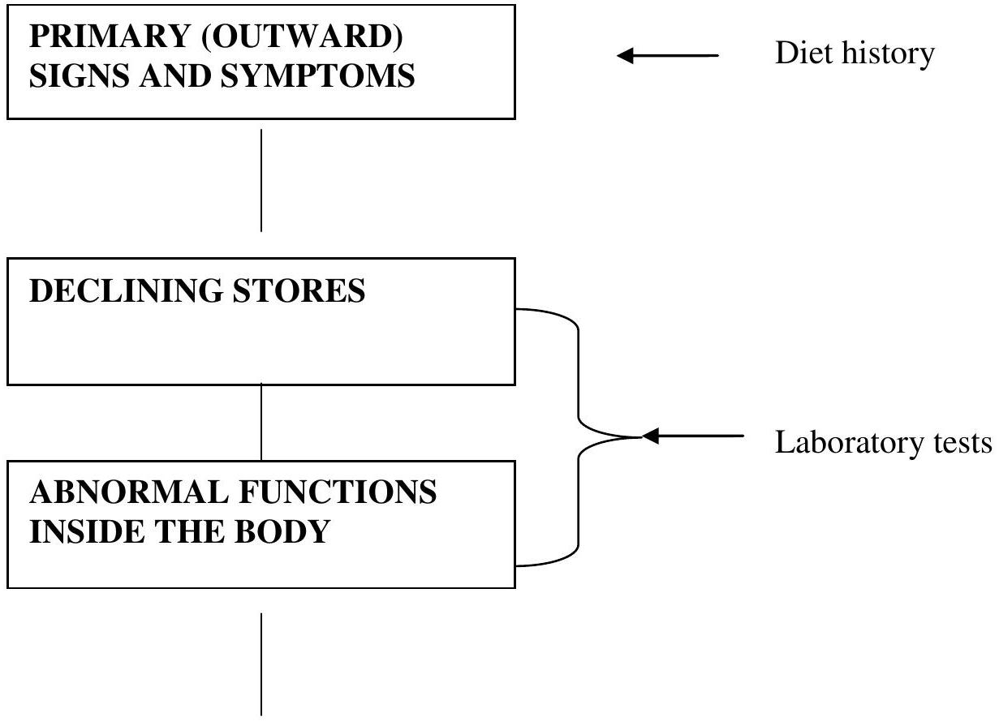
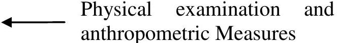

Human Nutrition (Repaired) by nutrition and dietetics (Kenya Medical Training College)
1.0 Introduction: What is Nutrition?
1. Nutrition is more than just the food we eat. It is a science that encompasses all the interactions that occur between living organisms and food.
2. These interactions include the physiological processes by an organism,
Ingests
Digests
Absorbs
Transports and utilize food.
3. Nutrition includes the biological actions and interactions of food with the body and their consequences for health and disease.
4. It also includes the psychological, social, cultural, economic, and technological factors that influence which foods we eat.
5. The biological importance of food is dictated by the nutrients it contains.
6. Other aspects of food such as taste, color, smell, texture, presentation and packaging help determine its psychological, cultural, social and personal value.
1.1 Objectives
By the end of this lesson you should be able to:
Define the terminology used in nutrition.
Classify Nutrients.
State nutrient needs of the body.
State the consequences of poor nutrition.
1.2 Nutrients
Are substances in foods that are required by the body for growth, maintenance and reproduction. They provide energy, contribute to structure and regulate biological processes. To date, approximately 45 nutrients are considered essential to human life.
Essential Nutrients
Are those substances that must be supplied in the diet because they either cannot be made by the body or cannot be made in large enough quantities to meet needs?
Non-Essential Substances
Can be made by the body for example; Lecithin, which is needed for nerve function, is not an essential nutrient because it can be made in the body from other substances. On the other hand, Vitamin A, which is needed for vision, is essential in the human diet because it cannot be made by the human body.
1.3 Classes of Nutrients
Food is more than something to satisfy your appetite. Food is fuel for your body. Each type of nutrient has a specific purpose and meets a specific need that your body has. The six nutrients are: Water, Carbohydrates, Protein, Lipids and Micronutrients which are Vitamins and Minerals.
1.3.1 Water
Is water a nutrient in a class by itself? Yes, water is a nutrient. It is the most important nutrient. Water makes up about $60 \%$ of the human body. Your body uses water 24 hours a day. It functions as a solvent, a lubricant, a transport medium, and a regulator of body temperature. It does not provide energy.
1.3.2 Carbohydrates
Include sugars, simple carbohydrates, and starches, more complex carbohydrates that are made of many sugars linked together. They provide a readily available source of energy. Fruits, vegetables and grains are the main sources of carbohydrates in the diet. Fiber is also a form of carbohydrate.
1.3.3 Protein
Protein provides structure and regulation of body processes. They are made of amino acids. Some amino acids can be made by the body, and others are essential in the diet.
Dietary protein must provide the correct combination of amino acids to meet the need for the essential amino acids.
Meat, milk, grains and legumes are good dietary sources of protein.
1.3.4 Lipids
Lipids commonly referred to as fats, provide a storage form of energy. Most lipids contain fatty acids. Several of which are essential nutrients. Lipids in the diet include fats and oils that occur naturally in food and those that are added in cooking or at the table.
Alcohol consumed in the diet also provides energy, but alcohol is not an essential nutrient.
1.3.5 Micronutrients
Vitamins and minerals are classified as micronutrients because they are needed in small amounts in the diet.
The amount required is expressed in milligrams or micrograms.
They do not provide energy but help regulate the production of energy from macronutrients.
Vitamins and minerals are found in most of the foods we eat. Fresh foods are generally the best sources of vitamins and minerals because storage, processing and cooking often result in losses.
Many of the vitamins and minerals in today's diet come from those intentionally added to food during manufacturing and processing or from nutritional supplements.
1.4 Nutrients in the Body: Biochemical and Physiological Needs
Together, the macronutrients and micronutrients provide three basic functions:-
Energy
Structure
Regulation
Which are needed for:-
Growth
Maintenance
Reproduction
Kilocalories
The energy needed for all body processes and activities is measured in Kilocalories or in kilojoules.
1 Kilocalorie = 4.18 K joules
Carbohydrates and protein provide 4 K calories per gram
Lipids provide 9 K calories per gram
Alcohol provides 7 K calories per gram.
If more energy is consumed than needed, the extra is stored as body fat, resulting in weight gain. If less energy is consumed in the diet than is needed, the body will burn its own carbohydrates, protein and lipids in order to meet energy needs.
1.5 Structural Nutrients
Nutrients from the diet are also needed for the formation and maintenance of body structure, water, proteins, lipids and minerals are important structural nutrients. For example, muscle is made up of primarily protein and water, and bone is composed of a protein core embedded with minerals.
1.6 Regulatory Nutrients
Nutrients are also involved in the regulation of the biochemical reactions of the living body. Together these reactions are referred to as metabolism.
Reactions must be regulated by being turned on and off and speeded up and slowed down at appropriate times in order to maintain a constant environment inside the body, referred to as homeostasis.
Vitamins, minerals, proteins are the chief regulatory nutrients. For example, proteins are involved in the regulation of body fluids. If we drink too little, a protein signals the kidneys to decrease the amount of water lost in the urine. Without regulation of this process, dehydration would frequently occur.
The regulation of the amount of sugar, glucose in the blood is another example of homeostasis regulated by proteins.
When a food is high in sugar, such as a bottle of soda, is consumed, the concentration of glucose in blood will rise. This causes the release of a protein that signals the removal of glucose from the blood and speeds up the chemical reactions needed to store the sugar for later use, or use it for energy.
When this process is not regulated it can result in a disorder called diabetes.
1.7 Nutrient Requirement: How much of each Nutrient do we need?
To support life and maintain health, nutrients must not only be supplied, they must be supplied in appropriate_amounts.
Both deficiencies and excess of nutrients can affect health either in short term or over a lifetime.
The amount of each nutrient needed by the body depends on the nutrient's function as well as the needs of individuals.
1.8 Effects of too little or too much
Conditions resulting from either too much or too little of one or more nutrients are referred to as malnutrition.
1.8.1 Under-Nutrition
A deficiency of nutrients, starvation, the most severe form of under nutrition is a deficiency of energy that causes poor growth, weight loss, decreased ability to do work, the inability to reproduce and if severe enough death.
Deficiencies of individual nutrients may also occur.
The symptoms of a single nutrient deficiency demonstrate the body functions that rely on the deficient nutrient.
For example, vitamin A is necessary for vision, as a result, a deficiency interferes with vision. Vitamin D is necessary for bone development; therefore a deficiency causes abnormal bone development.
Nutrient Deficiency Stages
Here is what is happening
Here's how you can tell:

Stages of nutrient deficiency development.
PHYSICAL (OUTWARD) SIGNS AND SYMPTOMS

Physical (outward) signs and symptoms of nutrient deficiency.
1.8.2 Over-Nutrition
An excess of nutrients, is also a form of malnutrition. When food is consumed in excess of energy need, the extra is stored as body fat. Some fat is necessary to insulate the body and store energy, but an excess of body fat, called obesity, increases the risk for many chronic diseases such as high blood pressure, heart disease and diabetes.
When excess of specific nutrients are consumed, an adverse or toxic reaction may occur. For example, a large dose of vitamin A can cause liver and kidney damage. Nutrient toxicities rarely occur as a result of food consumption because the amounts of vitamins and minerals in individual foods are well below nutrient requirements. Our intake of foods and therefore, vitamins and minerals is limited by our need for energy and the size of our stomachs.
On some rare occasion, a toxic level of a nutrient can be obtained from food. For instance, fish oils which are high in vitamin A can cause toxic reactions if eaten in high amounts.
Nutrient toxicity results more frequently from the use of vitamin and mineral supplements; than from food.
1.9 Short and long term effects of poor nutrition
The effects of a nutritional excess or deficiency may occur rapidly or take a lifetime to develop. Both short-term and long-term nutritional effects have important health implications.
For example, the symptoms associated with lack of water occur rapidly. An athlete exercising in hot weather may become dehydrated in a matter of hours, developing symptoms of such as headaches, dizziness, and confusion. Drinking water relieves the symptoms as rapidly as they appeared.
The effects of other nutritional imbalances may take weeks or months to manifest themselves. For example consumption of an iron-deficient diet over weeks or months will slowly cause symptoms such as a decreased capacity to work and irritability, which are indicative of iron deficiency anemia.
Large doses of vitamin B 6 when taken for months to years, cause nervous system abnormalities such as numbness and poor co-ordination.
An excess or deficiency of energy is another nutritional imbalance that takes a long term to manifest itself. When excess energy is consumed, excess body fat is deposited, but it may be months before the weight gain is significant. Likewise, as anyone who has tried to lose weight knows, it can take months of consuming less energy to use up the excess fat.
Recently nutritional effects that occur over a much longer time have become an important health focus. An individual's nutrient intake today can affect the development of cancer, or heart disease 20, 30 or 40 years from now.
The specific effects of nutrition on the development of chronic disease are difficult to determine because numerous variables or risk factors such as, heredity, air pollution, and stress, poverty, displacement etc. are often involved.
However nutrition has received a great deal of attention because it can be changed to decrease an individual's risk.
1.10 Summary of Definitions
Foods products derived from plants or animals that can be taken into the body to yield nutrients for maintenance of life and the growth and repair of tissues.
Nutrients substances obtained from food and used in the body to provide energy and structural materials and to regulate growth, maintenance and repair of body's tissues; nutrients may also reduce the risk for some chronic diseases.
Essential nutrients
Nutrients a person must obtain from food because the body cannot make them for itself in sufficient quantity to meet physiological needs, also called indispensable nutrients. About 40 nutrients are known to be essential for human beings.
Energy
The capacity to do work. The energy in food is chemical energy. The body can convert this chemical energy to mechanical, electrical or heat energy.
Energy -Yielding Nutrients
The nutrients that breakdown to yield energy the body can use:-
Carbohydrates
Fat
Protein
Calorie
This is a unit by which energy is measured. Food energy is measured in kilocalories (1000 calories equal 1 kilocalorie)
One kilocalorie is the amount of heat necessary to raise the temperature of 1 kilogram of water $1^{\circ} \mathrm{C}$
Macronutrients
Nutrients needed by the body in large amounts. These include Carbohydrates, Proteins and Lipids.
Metabolism
The sum of all the chemical reactions that take place in a living organism.
Homeostasis
The capacity to maintain a balanced internal body environment.
Malnutrition
Poor nutritional status resulting from a dietary intake either above or below that which is optimal to meet nutritional needs.
Under nutrition
Poor nutrition status resulting from a dietary intake below that which meets nutritional needs.
Over nutrition
Poor nutritional status resulting from a dietary intake in excess of that which is optimal for nutritional needs.
Toxic
The capacity to produce injury at some level of intake.
Risk factor
A characteristic or circumstance that is associated with the occurrence of a particular disease.
1.11 Summary
In this lesson an overview of the nutrition, nutrients and consequences of poor nutrition was provided. There are six categories of nutrients that the body needs to acquire from food: Protein, carbohydrates, fat, fiber vitamins and minerals and water. These nutrients can be classified as macronutrient and micronutrient. All nutrients play a key role in maintaining the normal growth and functioning of the body, as well as prevention of nutrition related health conditions.
1.11 Activity
Assess the dietary trends in Kenya and identify some of the issues that would impact on the nutrition status of individuals and communities.
1.12 Question
Define nutrition.
What is an essential nutrient?
List the six classes of nutrients.
List three functions provided by nutrients.
What unit(s) is (are) used to measure energy in nutrition?
What are some of the consequences of poor nutrition?
1.9 Further Reading
Garrow JS, James WPT, Ralph A (2000) Human nutrition and dietetics. $10^{\text {th }}$ ed. Churchill Livingstone, Edinburgh.
WHO (1985) Energy and protein requirements. Report of a joint FAO/WHO/UNU meeting (WHO Technical Report Series 724) WHO.
Smolin A and Grosvenor B (1994) Nutrition Science and Applications. Saunders College Publishing, USA.
Gibson, R.(1990) Principles of Nutritional Assessment. New York: Oxford University Press.
Bennion M, Scheule B (2000) Introductory Foods. $11^{\text {th }}$ ed. Macmillan Publishing Company, USA.
National Research Council (1989) Food and Nutrition Board. Recommended Dietary Allowances. $10^{\text {th }}$ ed. Washington, DC: National Academy Press.
Whitney E and Rolfes S (1996) Understanding Nutrition. $7^{\text {th }}$ ed. West Publishing New York